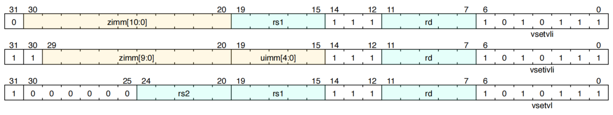
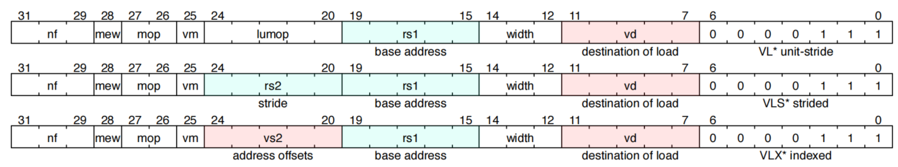

RISC-V Vector¶
RISC-V指令集架构中的向量指令集扩展RVV（RISC-V “V” Vector），具有向量长度和向量位宽灵活可变、提供多种寻址模式、拥有用于支持条件执行的掩码寄存器等特点。目前RVV扩展的规格文档已发布了稳定的1.0版本，RISC-V向量加解密标准也在2023年10月发布了1.0正式版。
向量扩展编程模型¶
向量扩展为基本的标量RISC-V ISA添加了32个向量寄存器和七个非特权控制与状态寄存器CSR（vstart、vxsat、vxrm、vcsr、vtype、vl、vlenb）
| 地址 | 权限 | 名称 | 描述 |
|---|---|---|---|
| 0x008 | URW | vstart | 向量起始位置 |
| 0x009 | URW | vxsat | 定点饱和标志 |
| 0x00A | URW | vxrm | 定点舍入模式 |
| 0x00F | URW | vcsr | 向量控制和状态寄存器 |
| 0xC20 | URO | vl | 向量个数 |
| 0xC21 | URO | vtype | 向量类型 |
| 0xC22 | URO | vlenb | VLEN/8 |
Vector type register
| Bits | Name | Description |
|---|---|---|
| 000 | vill | 非法值 |
| 001 | 0 | 保留 |
| 010 | vma | 非活跃数据元素处理策略 |
| 011 | vta | 尾部数据元素处理策略 |
| 100 | vsew[2:0] | SEW |
| 101 | vlmul[2:0] | LMUL |
向量元素到向量寄存器状态的映射¶
向量指令格式¶
RVV指令分为三大类
- 配置指令
- 加载和存储指令
- 算术指令
向量配置指令¶
向量配置和设置指令的格式: 
vset{i}vl{i}指令根据其参数设置vtype和vl。
vsetvli rd, rs1, vtypei #rd= new vl, rs1 = AVL, vtypei = new vtype setting
vsetivli rd, uimm, vtypei #rd= new vl, uimm = AVL, vtypei = new vtype setting
vsetvl rd, rs1, rs2 #rd= new vl, rs1 = AVL, rs2 = new vtype value
- t0寄存器存放一次能处理的数据元素数量，a0寄存器存放待处理数据元素数量，数据元素位宽16位，4个向量寄存器为一组，ta尾部采取未知策略，ma未活跃采取未知策略。
向量加载和存储指令¶
向量加载和存储指令的格式:  向量扩展支持3种地址寻址模式：
- 单位步长
unit-stride - 任意步长
stride - 索引（
gather-load/scatter-store）模式index
# vd destination, rs1 base address, vm is mask encoding (v0.t or <missing>)
vle8.v vd, (rs1), vm # 8-bit unit-stride load
vle16.v vd, (rs1), vm # 16-bit unit-stride load
vle32.v vd, (rs1), vm # 32-bit unit-stride load
vle64.v vd, (rs1), vm # 64-bit unit-stride load
# vs3 store data, rs1 base address, vm is mask encoding (v0.t or <missing>)
vse8.v vs3, (rs1), vm # 8-bit unit-stride store
vse16.v vs3, (rs1), vm # 16-bit unit-stride store
vse32.v vs3, (rs1), vm # 32-bit unit-stride store
vse64.v vs3, (rs1), vm # 64-bit unit-stride store
# Vector strided loads and stores
# vd destination, rs1 base address, rs2 寄存器字节数为stride
vlse8.v vd, (rs1), rs2, vm # 8-bit strided load
vlse16.v vd, (rs1), rs2, vm # 16-bit strided load
vlse32.v vd, (rs1), rs2, vm # 32-bit strided load
vlse64.v vd, (rs1), rs2, vm # 64-bit strided load
# vs3 store data, rs1 base address,rs2 寄存器字节数为stride
vsse8.v vs3, (rs1), rs2, vm # 8-bit strided load
vsse16.v vs3, (rs1), rs2, vm # 16-bit strided load
vsse32.v vs3, (rs1), rs2, vm # 32-bit strided load
vsse64.v vs3, (rs1), rs2, vm # 64-bit strided load
# 有序索引，访问内存时按照索引顺序有序访问
# 无序索引，访问内存时不保证访问顺序
# Vector indexed-unordered load instructions
# vd destination, rs1 base address, vs2 byte offsets
vluxei8.v vd, (rs1), vs2, vm # unordered
vluxei16.v vd, (rs1), vs2, vm # unordered
vluxei32.v vd, (rs1), vs2, vm # unordered
vluxei64.v vd, (rs1), vs2, vm # unordered
# Vector indexed-ordered load instructions
# vd destination, rs1 base address, vs2 byte offsets
vloxei8.v vd, (rs1), vs2, vm # ordered
vloxei16.v vd, (rs1), vs2, vm # ordered
vloxei32.v vd, (rs1), vs2, vm # ordered
vloxei64.v vd, (rs1), vs2, vm # ordered
# Vector indexed-unordered store instructions
# vs3 store data, rs1 base address, vs2 byte offsets
vsuxei8.v vs3, (rs1), vs2, vm # unordered
vsuxei16.v vs3, (rs1), vs2, vm # unordered
vsuxei32.v vs3, (rs1), vs2, vm # unordered
vsuxei64.v vs3, (rs1), vs2, vm # unordered
# Vector indexed-ordered store instructions
# vs3 store data, rs1 base address, vs2 byte offsets
vsoxei8.v vs3, (rs1), vs2, vm # ordered
vsoxei16.v vs3, (rs1), vs2, vm # ordered
vsoxei32.v vs3, (rs1), vs2, vm # ordered
vsoxei64.v vs3, (rs1), vs2, vm # ordered
Vector Load/Store Segment Instructions
将打包的连续段移动到多个目标向量寄存器组中
Vector Load/Store Whole Register Instructions
加载和存储整个向量寄存器组
向量算术指令¶
OP-V 主要操作码下向量算术指令的格式:
funct3编码了操作类型和源地址
| funct3[2:0] | Category | Operand | Type of Scale Operand |
|---|---|---|---|
| 000 | OPIVV | vector-vector | N/A |
| 001 | OPFVV | vector-vector | N/A |
| 010 | OPMVV | vector-vector | N/A |
| 011 | OPIVI | vector-immediate | imm[4:0] |
| 100 | OPIVX | vector-scalar | GPR x register rs1 |
| 101 | OPFVF | vector-scalar | FP f register rs1 |
| 110 | OPMVX | vector-scalar | GPR x register rs1 |
| 111 | OPCFG | scalars-imms | GPR x register rs1 & rs2/imm |
向量内存一致性模型¶
向量存储器指令在指令级遵循 RVWMO
向量整数算术指令¶
提供了一组向量整数算术指令。除非另有说明，否则整数运算会在溢出时wrap（ 相当于不对溢出做特殊处理）。
向量整数加法和减法¶
# Integer adds.
vadd.vv vd, vs2, vs1, vm # Vector-vector
vadd.vx vd, vs2, rs1, vm # vector-scalar
vadd.vi vd, vs2, imm, vm # vector-immediate
# Integer subtract
vsub.vv vd, vs2, vs1, vm # Vector-vector
vsub.vx vd, vs2, rs1, vm # vector-scalar
# Integer reverse subtract
vrsub.vx vd, vs2, rs1, vm # vd[i] = x[rs1] - vs2[i]
vrsub.vi vd, vs2, imm, vm # vd[i] = imm - vs2[i]
加宽向量加法和减法¶
根据较窄的源操作数在形成双倍宽度和之前是否首先进行符号扩展或零扩展，提供了有符号和无符号两种扩展的加/减指令。
# Widening unsigned integer add/subtract, 2*SEW= SEW +/- SEW
vwaddu.vv vd, vs2, vs1, vm # vector-vector
vwaddu.vx vd, vs2, rs1, vm # vector-scalar
vwsubu.vv vd, vs2, vs1, vm # vector-vector
vwsubu.vx vd, vs2, rs1, vm # vector-scalar
# Widening signed integer add/subtract, 2*SEW =SEW +/- SEW
vwadd.vv vd, vs2, vs1, vm # vector-vector
vwadd.vx vd, vs2, rs1, vm # vector-scalar
vwsub.vv vd, vs2, vs1, vm # vector-vector
vwsub.vx vd, vs2, rs1, vm # vector-scalar
# Widening unsigned integer add/subtract, 2*SEW= 2*SEW +/- SEW
vwaddu.wv vd, vs2, vs1, vm # vector-vector
vwaddu.wx vd, vs2, rs1, vm # vector-scalar
vwsubu.wv vd, vs2, vs1, vm # vector-vector
vwsubu.wx vd, vs2, rs1, vm # vector-scalar
# Widening signed integer add/subtract, 2*SEW =2*SEW +/- SEW
vwadd.wv vd, vs2, vs1, vm # vector-vector
vwadd.wx vd, vs2, rs1, vm # vector-scalar
vwsub.wv vd, vs2, vs1, vm # vector-vector
vwsub.wx vd, vs2, rs1, vm # vector-scalar
向量整数扩展指令¶
向量整数进位加/借位减指令¶
位逻辑运算¶
与、或、异或运算
向量移位指令¶
提供了一套完整的向量移位指令，包括逻辑左移(sll)以及逻辑右移（零扩展srl）和算术右移（符号扩展sra）。要移位的数据位于由vs2指定的向量寄存器组中，并且移位量值可以来自向量寄存器组vs1、标量整数寄存器rs1或零扩展的5位立即数。仅使用移位量值的低lg2(SEW)位来控制移位量。
移位量值的低lg2(SEW)位用于控制移位量是因为这些位能够覆盖所有可能的移位操作范围。例如，对于32位数据，lg2(32)等于5，因此我们使用5位来表示0到31的移位量，这足以覆盖所有可能的移位范围。这样做简化了硬件设计，避免了处理超出数据位宽的移位量，同时保证了移位操作在实际应用中的效率和正确性。
# Bit shift operations
vsll.vv vd, vs2, vs1, vm # Vector-vector
vsll.vx vd, vs2, rs1, vm # vector-scalar
vsll.vi vd, vs2, uimm, vm # vector-immediate
vsrl.vv vd, vs2, vs1, vm # Vector-vector
vsrl.vx vd, vs2, rs1, vm # vector-scalar
vsrl.vi vd, vs2, uimm, vm # vector-immediate
vsra.vv vd, vs2, vs1, vm # Vector-vector
vsra.vx vd, vs2, rs1, vm # vector-scalar
vsra.vi vd, vs2, uimm, vm # vector-immediate
向量变窄右移指令¶
变窄指令从较宽的操作数中提取一个较小的字段，并具有零扩展（srl）和符号扩展（sra）两种形式。移位量可以来自向量寄存器组、标量x寄存器或零扩展的5位立即数。移位量值的低lg2(2*SEW)位被使用（例如，对于SEW=64位到SEW=32位的缩小操作，使用低6位）。
#Narrowing shift right logical, SEW = (2*SEW) >>SEW
vnsrl.wv vd, vs2, vs1, vm # vector-vector
vnsrl.wx vd, vs2, rs1, vm # vector-scalar
vnsrl.wi vd, vs2, uimm, vm # vector-immediate
# Narrowing shift right arithmetic, SEW = (2*SEW)>> SEW
vnsra.wv vd, vs2, vs1, vm # vector-vector
vnsra.wx vd, vs2, rs1, vm # vector-scalar
vnsra.wi vd, vs2, uimm, vm # vector-immediate
整数比较指令¶
整数比较指令在比较结果为真时将1写入目标掩码寄存器元素，否则写入0。
向量整数的最小值和最大值指令¶
向量单宽度乘法指令¶
单宽度乘法指令执行SEW位*SEW位的乘法以生成2SEW位乘积，然后在SEW位宽的目标位置返回乘积的一半。mul版本将乘积的低字写入目标寄存器，而mulh版本将乘积的高字写入目标寄存器。
向量扩展整数乘法指令¶
加宽的整数乘法指令从SEW位SEW位的乘法中返回完整的2SEW位乘积。
向量单宽度整数乘加指令¶
整数乘加指令是具有破坏性的（会修改源操作寄存器的值），有两种形式，一种是覆盖加数或减数（vmacc, vnmsac），一种是覆盖第一个乘数（vmadd, vnmsub）。
乘积的低半部分与第三个操作数相加或相减
# Integer multiply-add, overwrite addend
vmacc.vv vd, vs1, vs2, vm # vd[i] = +(vs1[i] * vs2[i]) + vd[i]
vmacc.vx vd, rs1, vs2, vm # vd[i] = +(x[rs1] * vs2[i]) + vd[i]
# Integer multiply-sub, overwrite minuend
vnmsac.vv vd, vs1, vs2, vm # vd[i] = -(vs1[i] * vs2[i]) + vd[i]
vnmsac.vx vd, rs1, vs2, vm # vd[i] = -(x[rs1] * vs2[i]) + vd[i]
# Integer multiply-add, overwrite multiplicand
vmadd.vv vd, vs1, vs2, vm # vd[i] = (vs1[i] * vd[i]) + vs2[i]
vmadd.vx vd, rs1, vs2, vm # vd[i] = (x[rs1] * vd[i]) + vs2[i]
# Integer multiply-sub, overwrite multiplicand
vnmsub.vv vd, vs1, vs2, vm # vd[i] = -(vs1[i] * vd[i]) + vs2[i]
vnmsub.vx vd, rs1, vs2, vm # vd[i] = -(x[rs1] * vd[i]) + vs2[i]
向量扩展整数乘法-加法指令¶
加宽的整数乘加指令将SEW位SEW位乘法的全部2SEW位乘积加到2SEW位值，并产生2SEW位结果。支持有符号和无符号乘法操作数的所有组合。
向量除法和取余指令¶
向量整数合并指令¶
向量整数合并指令基于掩码组合两个源操作数。与常规算术指令不同，合并操作对所有主体元素（即从vstart到当前向量长度vl的元素集）进行操作。
vmerge指令被编码为带掩码的指令（vm=0）。这些指令按以下方式组合两个源。在掩码值为零的元素处，将第一个操作数复制到目标元素，否则将第二个操作数复制到目标元素。第一个操作数始终是由vs2指定的向量寄存器组。第二个操作数是由vs1指定的向量寄存器组，或由rs1指定的标量x寄存器，或是一个5位符号扩展的立即数。
vmerge.vvm vd, vs2, vs1, v0 # vd[i] = v0.mask[i] ? vs1[i] : vs2[i]
vmerge.vxm vd, vs2, rs1, v0 # vd[i] = v0.mask[i] ? x[rs1] : vs2[i]
vmerge.vim vd, vs2, imm, v0 # vd[i] = v0.mask[i] ? imm : vs2[i]
向量整数移动指令¶
向量整数移动指令将一个源操作数复制到向量寄存器组。vmv.v.v变体复制一个向量寄存器组，而vmv.v.x和vmv.v.i变体将标量寄存器或立即数分散到目标向量寄存器组的所有活动元素中。这些指令被编码为未屏蔽的指令（vm=1）。第一个操作数指定器（vs2）必须包含v0，vs2中的任何其他向量寄存器号都是保留的。
向量定点算术指令¶
将整数运算指令扩展即可支持定点运算指令。
向量浮点指令¶
向量掩码指令¶
向量归约指令¶
归约指令接收一个向量寄存器组的元素,和一个放在向量寄存器元素0位置的标量, 通过某种归约操作得到一个标量值, 该标量值也放在一个向量寄存器的元素0位置. 归约操作中的标量都是放在一个向量寄存器中, 而不是向量寄存器组，之所以不把结果放在标量寄存器, 是为了与标量core 去耦。
参考资料¶
RVV1.0 Spec
RVV intrinsic
RVV Crypto Spec